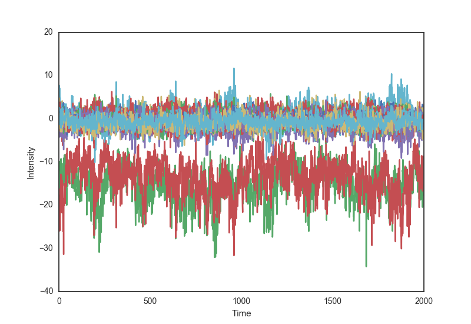

Week 8 notes
Reconstructor
Below are some videos of the soapy simulation slopes after they have been converted into Zernike Modes. The first video shows the unfiltered measurements of Zernike slopes measured by the Shack-Hartmann Wavefront Sensor. By averaging the tip & tilt of all Subapertures it is possible to show only these two Zernike modes in video 2. The third video shows the remaining Zernike Modes ( up to the 30th)
Residual Errors from Last Week

Last week I found some unexpected residual zernike errors from the results of the FeedForward network.
It appeared to show that the Networks predictions consistently underestimated the tip and tilt zernike modes.
This was surprising as I had thought that if the network was not fully trained, the errors would be larger, yet still have an mean value of 0.
In this video we can see the residual errors of the network prediction seem to have a general trend to them.
It would appear that the top left of the Wavefront Sensor is consistently red while the bottom right is blue.
This implies that the network training is not performing as well as expected.